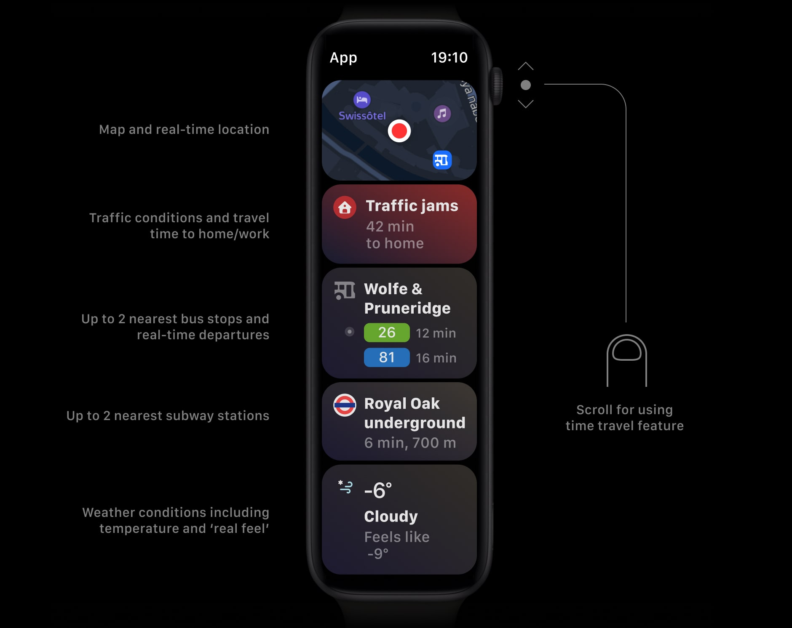

Watch is the most popular smartwatch in the world and allows users to get relevant information quickly. People use our mobile app to check traffic conditions and public transport. We decided it was important to bring these features to Watch as well.
Having a maps app is essential for convenience, time saving, and safety. In 2018 we started the project with a focus on several key features.

One of the most useful features of Yandex Maps is the ability to view the city from a bird’s-eye perspective. I had an idea to place compact modules with different types of information on a single screen. Navigation between them is done using the Digital Crown or finger scrolling.
Starting from the top, the first module is the map itself. It is simple but critical. The main idea is to show the map directly on the main screen as a module. Each module can be tapped to access detailed information.

The next module shows traffic conditions. Traffic prediction is based on the time travel feature, which helps users choose the best time to avoid congestion.

The app also provides real-time public transport information, including bus and metro schedules. This module focuses on up-to-date transport data.

The final module is weather. Weather conditions influence traffic and the comfort of waiting for public transport, so this information is an important part of the experience.

To validate the concept, I created a detailed interactive prototype. At that time, it was not possible to test prototypes directly on a physical Apple Watch. The high-fidelity prototype helped answer all questions about how the app works.
After release, the application was featured in the Best of watchOS 6 selection in 2019.